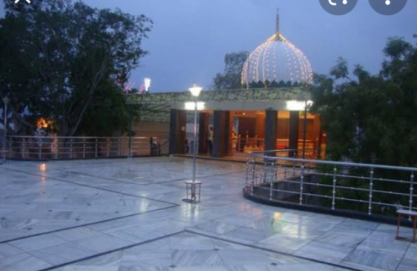

DHOLPUR
THE LAND OF THE RED STONE

The Dholpur Pahad Dargah
The Dholpur Pahad Dargah is the shrine of the revered Sufi saint Hazrat Sarf Abdal Shah (Rahmatullah Alaih), who is popularly known as "Pahad Wale Baba" (Saint of the Hill) because his tomb is situated on top of a 300-foot high hill in Dholpur, Rajasthan. Key Information Saint's Name: Hazrat Sarf Abdal Shah (R.A.). Location: The shrine is located in Gujjar Colony, Machkund Road, Dholpur, Rajasthan, India. Significance: It is a revered place of worship for people of all faiths and is known for its peaceful environment. Architecture/History: The shrine is believed to have been built in the 16th-17th century. Accessibility: The dargah has a wheelchair-accessible entrance and parking lot.
.avif)
The Machkund Temple
Machkund in Dholpur, Rajasthan, is a significant pilgrimage site featuring a sacred water tank (kund) surrounded by ancient temples and chhatris (cenotaphs) built from Dholpur's red sandstone, named after King Machkund and known for its serene, spiritual atmosphere and mythological tales, particularly involving King Machkund burning the demon Kaal Yavan with his gaze. It's a peaceful spot for history lovers, nature admirers, and devotees seeking tranquility, blending cultural heritage with natural beauty, with basic amenities but a strong sense of local spirituality.
.avif)
The Nihal Tower
Dholpur's Ghanta Ghar, or Nihal Tower, is a historic, 150-foot tall, seven-storey clock tower built from red and white stone, notable for its Indo-Muslim architecture, large 600 kg bell (imported from the UK), and 125 spiral steps, serving as a central landmark, though its clock is now silent, needing restoration.
.jpg)
The Chambal River
Dholpur is a historic city in eastern Rajasthan, India, known for its deep red sandstone and its location on the Chambal River, a major lifeline with significant biodiversity, including Gharials, crocodiles, and Ganges river dolphins. It was a princely state with rich history under various rulers, featuring ancient forts like Shergarh Fort, and is famous for its river safaris, offering glimpses of wildlife within dramatic ravines, while Hindi and regional dialects are spoken.
I WISH TO VISIT DHOLPUR
PLAN YOUR TRIP